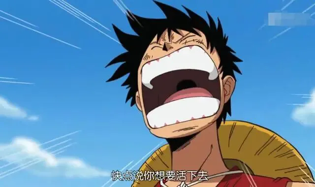

孖仔帮
公众号ID：twinsbang
关注
文|摘自简尼尔森《正面管教》
网图|侵删
上周五，圆圈兄弟幼儿园毕业了，接着是漫长的暑假...
圈圈开心到模糊，激动地问我：“妈妈，我们放暑假了，我好开心啊，你开心吗？”
“不开心！”
苍天啦，饶了我吧，我真的装不下去了。
圈圈立马急了：”为什么？你为什么不开心呀？我们在家里陪你，你就不用那么无聊了！“
“不，儿砸啊，妈妈不无聊，不用陪，只想静静！”
我憋了一肚子内伤，好想脱口而出，最后忍住了，只好改口：“不开心才怪。”
事实是，我开心才怪！
这才过了一个星期，我就在掐指算开学的日子了，他们的学习用品，老早就准备好，巴不得下一秒就送他们归笼去。
你可以想象吗？两个6岁男小孩的世界，每一天都是灾难片，打打杀杀，吵吵闹闹，跌跌撞撞，蹦蹦跳跳...
我太烦了，真的脑壳疼。
为了压抑住我那随时咆哮的洪荒之力，我又重新拿起了简尼尔森的《正面管教》。
这是本相当实用的育儿书，用在双胞胎男孩的身上更加立竿见影。
我在圆圈小月龄时就看过一遍，那时还看不懂，没太大感触，如今再看，瞬间相见恨晚，唯有泪千行。
特别是谈到如何解决两孩子之间的矛盾，比如争吵、打架时，真是醍醐灌顶，瞬间治愈。
上期推文我发动全网的双胞胎家长要让两孩子的吵架再飞一会儿，结果很多私信问，那飞完之后呢？该如何解决呢？
今天这篇有答案。
以下文字摘自简尼尔森的《正面管教》
温馨提示：文章有点长，可收藏慢慢看，他日必定能拯救你于苦海之中。
孩子为什么会打架呢？他们从打架中能得到什么呢？可能想获得你的关注，或者觉得打架能让他们感到自己很强大，可能是无聊，也可能是故意惹恼自己的兄弟姐妹，或者是为了寻求别的事儿给不了他们的兴奋感。
这也是一种孩子彼此联系的方式。作为成年人你可能无法理解，但是想一想那些小动物，小狗熊或小狗，它们经常打架，这是互动，这是肢体接触。
除此之外，还可能是因为某个孩子被父母百般宠溺，会让其他的兄弟姐妹看上去很不如这个孩子好。
孩子打架时，你的感受是什么呢？生气、愤怒、无助，乃至完全失控？我自己是容易完全失控的，因为我努力尝试要么转移他们的注意力，要么完全不管他们，但是都没有用，我控制不了。
当孩子们争吵打架时，这其实是父母保持冷静并帮助他们学会解决问题的机会。父母可以教他们如何发现内在的同情心，指导他们如何道歉，帮助他们学会不需要产生自己是受害者这样的心态，帮助他们学会如何负责任。
承担责任是我们希望孩子学习的一个非常重要的品质，有些和我一起工作的成年人从来没有学习过这种有价值的生活技能，对他们成年之后的生活产生了负面影响。
而且当孩子能够使用我刚才提及的技能，他们就有机会使用自己的能力，本能地后悔反思。父母不应该担任裁判或法官的角色，不参与其中，不偏袒，孩子们不需要充当防卫者的角色，做出防卫的反应。相反，他们会本能地后悔反思。
当父母介入并且偏袒一方时，我们就在不知不觉中训练孩子成为受害者或是欺凌者的角色。
所以，当孩子不必在父母面前保护自己时，孩子与自己的兄弟姐妹们也会建立起相互信任的亲密关系。这样可以更好地沟通和解决问题。他们会通过练习来学习分辨自己的感受，用尊重的方式表达自己需要或想要什么。
除此之外，孩子之间发生冲突，父母的示范是非常有必要的。如果我们控制不了自己的情绪，就不能指望孩子控制自己的行为。
我想分享给大家一个很有用的方法。走出房间，做个深呼吸，告诉自己：孩子打架让人恼火，但却是他们练习的机会，也是我自己练习保持冷静的机会。这样我会在以后有需要时做出正确的反应，而不是大脑中的冲动反应。
孩子被打，是第一个刺激我情绪失控的情况，当我看到孩子被打时，我必须尽力保持冷静。这并不容易做到，但我相信你会想出更多方式。
孩子们从中学到了什么呢？当孩子与自己的兄弟姐妹争吵时，他们可以在今后学到如何处理权力斗争，如何处理冲突，如何解决分歧，如何自信地站在自己的立场上，如何谈判和妥协。
要做到这一点，我们需要进入孩子的世界。要了解孩子的感受，用同理心和孩子交流。所以，作为父母，让孩子有自己的感受，感受到你能理解他，并能给予他们所需要的联系和支持是很重要的。
我想澄清的是，同理心并不意味着同情。过度保护对孩子没有帮助，许多父母以爱的名义这样做。他们相信，过度保护可以使他们免受许多负面情绪的伤害，但这些负面情绪孩子在未来依然会经历。
我们的目的不是让孩子受苦，但是要允许他们受苦。受苦的经历能够发展孩子的“失望肌肉”，逐渐培养他们相信自己有能力面对未来的信念。
学习如何驾驭兄弟姐妹间正常的争吵，对你来说，可能比对孩子更难。
相信我，父母以爱的名义犯下的最大错误之一就是介入太多，扮演裁判或法官的角色。
当他们打架的时候，你出现在那里，会让他们打得更凶和更欺凌别人，成为更欺凌者和受害者的角色。
当你想当然地以为年龄大的孩子欺负小孩子，想去拯救年幼的人时，就会发生这种情况。这时候，最年幼的受害者开始了一场你看不到的冲突，仅仅是为了从你身上得到帮助，或加强自己是个受害者这样的不健康心理。
我自己就有这种经历。我是7个孩子中最小的一个，从小就学会，当我和哥哥发生冲突的时候，我的父母没有把我当作受害者去拯救。而我学会了自己的行为激怒哥哥们，会产生什么负面结果，然后我会从自己行为产生的后果中学习。
注意我说的是自学，而不是通过父母的惩罚性后果。当一个孩子需要保护自己的时候，就是欺凌行为的开始，因为这个孩子得到的是惩罚和埋怨。事实上，他们可以学习说：我还可以怎么做？
另外一个孩子通过负面经历学习解决问题这个技能的问题是，我从刚刚的结果中学到了什么？我还能做些什么来获得更好的结果呢？
这些问题一开始需要你的帮助。但随着年龄的增长，这将成为他们思维的自然组成部分，这将成为他们自然流露的语言。你的孩子会问更多的问题，比如：我能做些什么来减轻事情的后果，或者通过承担责任来弥补什么？我能做些什么来减少损失？
父母可以使用好奇的问题给予孩子一些引导，不是责备，而是专注于他们还能做些什么，结果会有什么不同。有时他们学习同样的经验需要多次。
作为父母，重要的是让他们自己学习，而不是逼着他们学习。孩子争吵和分歧越多，练习和学习的机会就越多，这值得庆祝。
接下来，我要讲的是另一个正面管教工具是三个B：走开Beat it，忍受 Bearit，和把他们分开 Boom them out。
第一个B表示走开，这是我个人最喜欢的。当孩子开始争吵时，你要离开那个房间，相信他们可以自己停止争吵，最终解决问题。这需要长时间来训练，我也认为这是他们练习我希望他们学会技能的最好方法。当我走开时，这不仅有助于我保持冷静，而且也有助于他们理解并解决问题。
为什么这样说呢？当我不介入他们的问题时，他们的本能不是马上进入防御模式，而是会立刻产生一种悔恨感。他们通常会马上说对不起，或者跑去拿冰袋放在淤青或伤口上，或者互相拥抱和道歉。这是只有在我不介入才会发生的事情，因为他们在学习，他们没有受害者或欺凌者心理。
而当我们介入，开始站在某个孩子的一边或惩罚孩子们时，我们在教育孩子们防御方式，而不是自己承担责任，以及如何解决问题。
在我家，我们很注意一个F开头的词汇，就是错误 fault这个词，假如出现了冲突，有人说，这是谁的错？whose fault is it？我就会告诉他们，是谁的错并不重要，重要的是我们如何修复。
这就变成了一个积极的有教育意义的时刻。我们要么制定下一次如何避免的计划，要么说对不起，说彼此的感受，问彼此需要什么，所有这样的机会都可以来练习这些方法。
下一个B是忍受。这真的很难。作为一个家长，当你的孩子在打架时，你待在房间里，却什么也不做。这对我来说是几乎是不可能的。
我和大多数父母都会有一种本能，想马上去保护他们。我不想看到有人受伤。可如果这样，我其实是在培训受害者和欺凌者，他们会一次一次重复同样的行为。如果我做不到忍着不干预，那就走开。
如果孩子的情况失控了，看看能否转移他们的注意力到另一个活动中，比如接力，或者其他合作更多、竞争较少的活动。
我发现我的三个儿子有一个现象，当一个孩子真的受伤时，他们会立即进入康复模式、或做出修复、或道歉。但是当我在房间里的时候，我最小的孩子会哭得更大声，更戏剧化。这立刻让年长的孩子感到更愤怒，那么易怒的孩子就会成为一个防御者和欺凌者的角色。
所以这就是为什么练习这些正面管教技能如此重要的原因。
最后一个B是把他们分开，用平等的方式对待他们，并跟孩子说：我相信你们能解决这个问题。或者说，孩子们，你们各自去不同的房间待着，直到能平静下来，然后找到一个解决方案，专注于解决问题。这让你的孩子有机会在冷静下来的时候理性地思考。
育儿方法有激进的，也有过于严厉和惩罚性的，也有过于宽容和放松的。在极端家庭中长大的孩子们往往更爱打架。
如果父母非常严格，使用过于严厉的纪律或体罚时，孩子们往往会与他们的兄弟姐妹打架。当他们能够摆脱父母时，父母的欺凌行为也成了孩子的模仿对象。
在父母非常宽容或忽视的家庭长大的孩子，觉得自己没有得到足够的关注，也没有指导自己行为的规则，所以他们也更倾向于打架。
因此，在这两个极端的中间是正面管教家庭。作为一个正面管教的家长，你尊重孩子的个人需要，把孩子视为独特的个体，促进合作而不是竞争，并鼓励在整个家庭中建立积极而有爱心的情感连接。
最好的实践方法之一是家庭会议。那么，我们如何教孩子通过家庭会议解决问题呢？首先，当孩子小的时候，我们需要带领他们并示范家庭会议的整个流程。久而久之，他们就能用这个工具自己解决与兄弟姐妹以及其他人的冲突。
第一步是给予和接收感谢和感激。这十分有助于建立孩子之间的情感连接，也将把他们带到专注于解决问题的下一步。
关注解决问题时，需要两个孩子都已经冷静下来，教给孩子和示范“积极暂停”很有必要，能够帮助孩子完全冷静下来。
我记得最近和我儿子生了气，我冷静了五分钟后回来，我觉得我已经冷静了，但他注意到我的语调仍然很冷硬。他很尊重得跟我说：妈妈，你是想谈一谈，还是再冷静五分钟？虽然那一刻我还是有点生气，但我承认这句话很有帮助，而且我意识到从长远来看，我也在教导他，即使自己生气时，别人也可以接近。
如果我冷静地接受他的建议，再花5分钟，也会对他未来有帮助。于是我问他：再花五分钟会不会也帮到你？后来我和儿子都冷静下来以后，我们进行了交谈，我肯定了他在我不冷静时及时善意地提醒我。
所以你可以在处理冲突时用你的孩子树立榜样。使用“我”句式，看看你的感受，使用“积极暂停”让自己先冷静下来，然后重新回到刚才的场景里，修复问题。
都冷静下来，相互表达了致谢和感激以后，然后请每个孩子表达自己的想法，并倾听另一个孩子的想法，在头脑风暴时关注解决问题的建议，每个人都可以提出自己的建议。可以提前给每个孩子一个发言棒，或提前达成协议，每个人发言的时候，别人不干扰。
然后请孩子们选择其中一个解决方法尝试一周。
我们一直在谈论这个，在每周的家庭会议上练习关注解决方法，这是很好的方法。我们不是关注责备，而是关注解决方法。
正面管教的方法有助于让孩子有更多的自信、信任感、责任感和高度的自尊心。所有这些品质反过来又会影响到孩子彼此之间的关系，而且他们没有必要为了爱，为了引起你的关注和你的尊重，或者为了证明他们的能力，而贬低自己的兄弟姐妹。
从错误中吸取教训，让孩子知道他们犯了错误没关系，兄弟姐妹之间有争吵是正常的。因此，不要责怪自己或者孩子，不要有不切实际的目标或期望，而是要利用这些冲突，教育我们的孩子。
每个人的需求、感受和观点都很重要，而且常常是不同的。作为父母，不要偏袒，不要互相比较，保持冷静。孩子之间的争吵很正常，即使打架也很可能不会出现流血或骨折。
请记住，没有完美的父母。
-END-
今日互动话题
#你觉得正面管教工具，适用于双胞胎吗？#
评论区聊一聊呗！
微信公众号：孖仔帮
ID : twinsbang
专注双胞胎孕育，养育，教育经验分享
扫码关注我们
点一下你会更好看耶

